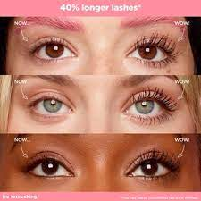
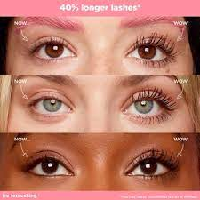

Lengthening mascara contains the usual mascara ingredients, as well as short synthetic fibres. The nylon or rayon fibres attach themselves to the lashes on application and extend your natural lashes. Most lengthening mascaras also have volumizing and curl- holding properties, making your lashes look fuller and more beautifully shaped
*TIP*– Lengthening mascara can clump easily so make sure to apply it in front of a well-lit mirror, and apply no more than 2 coats.–Curling your eyelashes after application will give a dramatic effect. – If you have sensitive skin around your eyes, test the mascara by putting a little dot on the side of your eye and leaving for an hour or so before applying it for a night out. Red and itchy eyes are not ideal when you’re out for a special occasion!